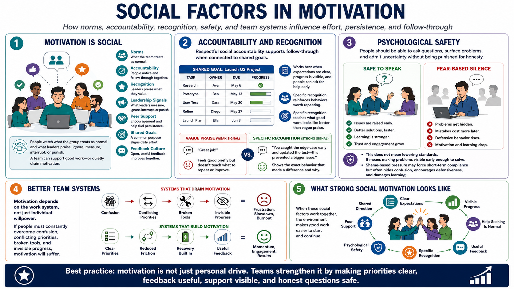

Social Motivation and Team Systems
Connecting to LMS... Progress: in progress

Narration
Motivation is social as well as individual. Norms, accountability, recognition, leadership signals, peer support, shared goals, and feedback culture all influence effort and persistence. People watch what the group treats as normal. They also watch what leaders praise, ignore, measure, interrupt, or punish. A team can make good work easier to continue, or it can quietly drain motivation from the work it claims to value.
Social accountability can support follow-through when it is respectful and connected to shared goals. It works best when expectations are clear, progress is visible, and people can ask for help before a small issue becomes a failure. Recognition also matters when it points to behaviors worth repeating. Specific recognition teaches the team what good work looks like more effectively than vague praise.
Psychological safety at a practical level means people can ask questions, surface problems, and admit uncertainty without being punished for honesty. This does not mean lowering standards. It means creating a climate where problems become visible early enough to solve. Shame-based pressure can force short-term compliance, but it often hides confusion, encourages defensive behavior, and damages learning.
Teams should not depend only on heroic individual motivation. If the system requires people to constantly overcome confusion, conflicting priorities, broken tools, and invisible progress, motivation will eventually suffer. Better team systems make important work easier to start and continue. They clarify priorities, reduce unnecessary friction, support recovery, and build momentum through shared direction and useful feedback.